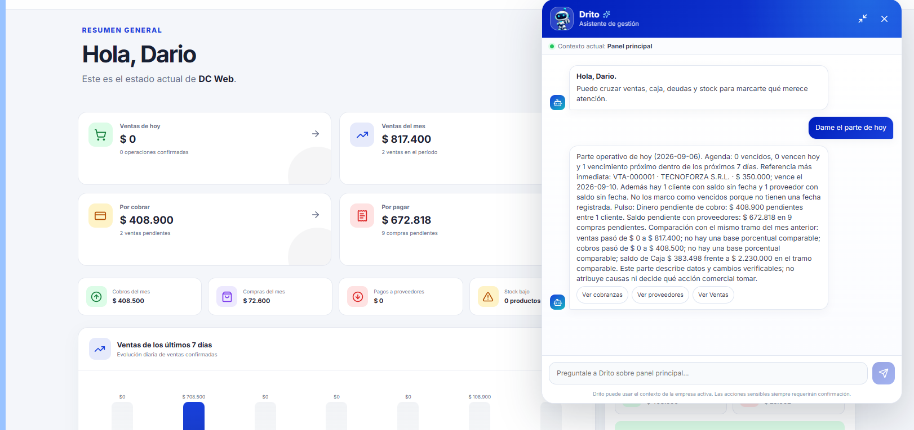
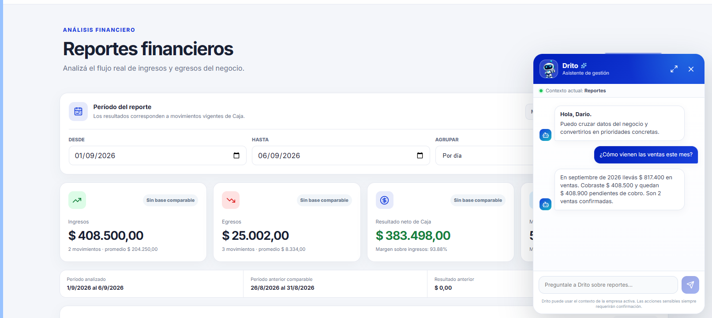
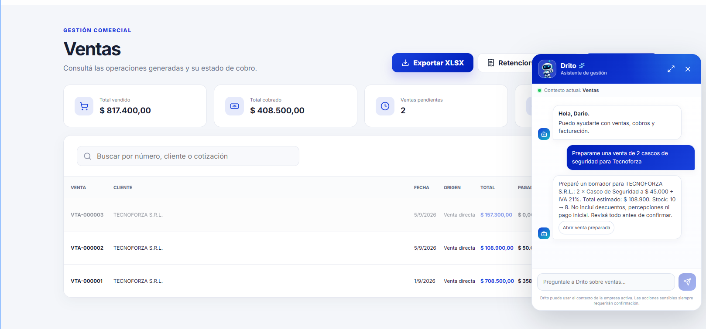

Todo centralizado
Clientes, productos, ventas, compras, caja y cuentas corrientes conectados dentro del mismo sistema.
Ventas, compras, stock, clientes, cuentas corrientes, caja, reportes y gestión fiscal desde un solo lugar. Además, el Asistente Drito puede ayudarte a consultar información y preparar operaciones para revisión. Con Drito Multiempresa también podés administrar dos o más empresas totalmente independientes desde la misma plataforma.
Una sola plataforma. Cada empresa, sus propios datos.

Drito reúne la información diaria de tu negocio en un solo lugar, para que puedas saber qué vendiste, qué cobraste, qué tenés en stock y qué necesita tu atención.
Clientes, productos, ventas, compras, caja y cuentas corrientes conectados dentro del mismo sistema.
Consultá rápidamente el estado de tu negocio sin depender de diferentes archivos, anotaciones o planillas.
Drito relaciona las operaciones entre sí para reducir trabajo manual y mantener la información actualizada.
Drito organiza las principales áreas de tu comercio o empresa para que la información acompañe cada operación.
Registrá ventas, consultá su estado y llevá el seguimiento de pagos y cobranzas.
Mantené productos, precios y existencias organizados y disponibles para trabajar.
Centralizá sus datos, operaciones, movimientos y cuentas corrientes.
Registrá las operaciones con proveedores y mantené la información comercial relacionada.
Controlá ingresos y egresos y conocé los movimientos reales de dinero de tu negocio.
Administrá dos o más empresas desde Drito, manteniendo clientes, productos, stock, ventas, compras, caja y configuración independientes para cada una.
Convertí las operaciones registradas en información útil para administrar y acompañar la gestión fiscal.
Si administrás más de una empresa, Drito te permite trabajar con todas desde el mismo sistema sin mezclar información. Cada empresa conserva sus propios datos, movimientos y configuración.
Cada empresa mantiene separados sus clientes, productos, stock, ventas, compras, caja y cuentas corrientes.
Cambiá de empresa desde la misma plataforma y seguí trabajando con las mismas herramientas, sin abrir sistemas distintos.
Cada empresa puede tener su identidad, preferencias y gestión fiscal por separado, sin compartir datos que no correspondan.
No necesitás cambiar tu forma de trabajar de un día para otro. Primero conocemos tu negocio, definimos si necesitás Drito Unitario o Drito Multiempresa, configuramos el sistema y te acompañamos durante la puesta en marcha.
Conocemos tu actividad, tus necesidades y qué partes de la gestión querés organizar con Drito.
Preparamos el sistema con la información y configuración necesarias para tu comercio o empresa.
Realizamos la puesta en marcha y te mostramos cómo utilizar las herramientas que vas a necesitar todos los días.
Empezás a trabajar con ventas, clientes, stock, caja y demás áreas relacionadas dentro de un mismo sistema.
Drito acompaña al usuario dentro de cada área del sistema, utilizando el contexto de la empresa activa para responder consultas, resumir información y preparar operaciones.



Recorré las principales pantallas del sistema y descubrí cómo se conectan las distintas áreas de tu negocio.
Una vista general de las principales áreas de tu negocio.
Contanos cómo trabajás y qué necesitás organizar. Podés elegir Drito Unitario para una empresa o Drito Multiempresa para administrar dos o más empresas independientes desde la misma plataforma.